Objetivo
Este reporte documenta la Actividad 16, «La verdad en los bits: adquisición forense con FTK Imager». El objetivo es realizar la adquisición forense de una memoria USB, que funge como evidencia, creando una imagen bit a bit en formato Raw (dd) con la herramienta FTK Imager, y verificar su integridad mediante los hashes MD5 y SHA-1. Además, se documenta cada paso con capturas de pantalla y se responden las preguntas sobre los formatos de imagen forense.
El análisis forense digital es un conjunto de técnicas de recopilación y peritaje de datos que, sin modificar la evidencia, permite responder ante un incidente en un marco legal. Se divide usualmente en las cinco fases de la tabla 1; esta actividad corresponde principalmente a la primera (adquisición) y sienta las bases de la segunda (preservación), ya que todo el análisis posterior debe hacerse sobre la copia y no sobre el original.
| Fase | Descripción |
|---|---|
| 1. Adquisición | Se obtienen copias bit a bit de la información que puede estar vinculada con el incidente, evitando modificar cualquier dato. |
| 2. Preservación | Se resguarda la evidencia original y sus copias, verificando su integridad con funciones hash y manteniendo la cadena de custodia. |
| 3. Análisis | Se examinan las copias para encontrar rastros, archivos y eventos relacionados con el incidente. |
| 4. Documentación | Se registra de forma detallada cada acción realizada para que el proceso sea verificable y reproducible. |
| 5. Presentación | Se exponen los hallazgos y su soporte ante la institución o autoridad que los requiera. |
Desarrollo
Obtención e instalación de FTK Imager
FTK Imager es una herramienta forense gratuita desarrollada por AccessData (hoy parte de Exterro) que permite crear imágenes forenses de discos duros, memorias USB y tarjetas de memoria. La imagen es una copia exacta del dispositivo, con todos sus datos y metadatos, que puede analizarse sin riesgo de alterar el original.
Según la guía de la actividad, el software se descarga desde el sitio de Exterro (https://www.exterro.com/): en el menú «Products» se entra a «Digital Forensics», se elige «FTK Imager» y se completa el formulario de «Download FTK Imager Now». Después se ejecuta el instalador como administrador y se sigue el asistente de instalación.
Una vez instalado, se ejecuta el programa. La figura 1 muestra la ventana principal de FTK Imager, aún sin evidencia cargada.
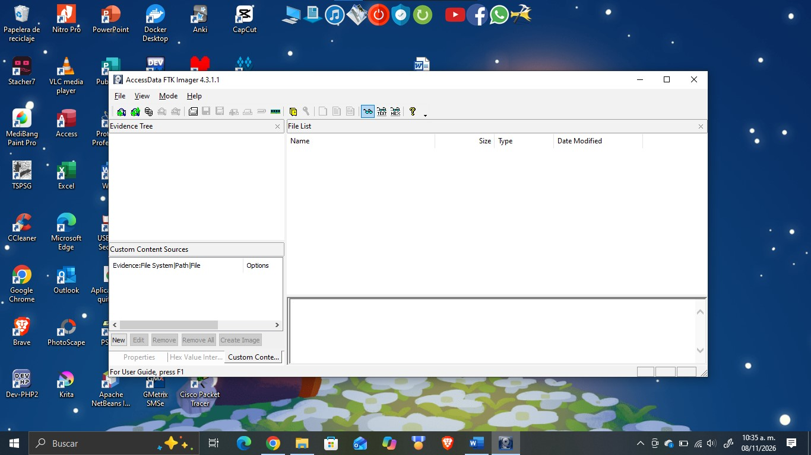
Selección de la evidencia
Se conectó una memoria USB a la computadora como evidencia. Es importante señalar que, en un caso real, se debe usar un bloqueador de escritura para impedir que el sistema operativo modifique la evidencia; para esta práctica se omitió su uso, como lo indica la actividad.
Para iniciar la adquisición se abrió el menú File y se seleccionó la opción «Create Disk Image…».
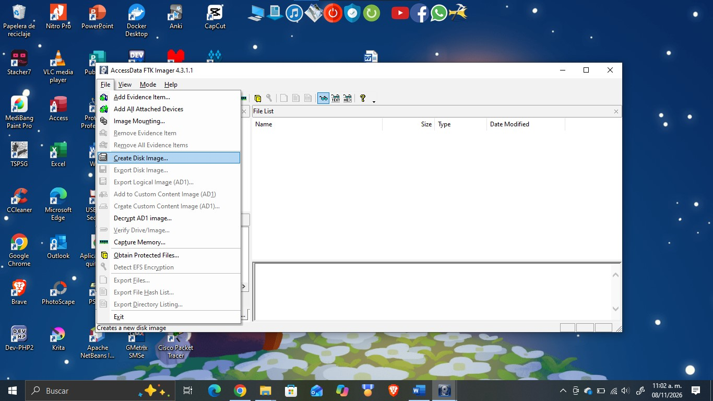
En la ventana «Select Source» se eligió «Physical Drive», ya que se necesita copiar el dispositivo completo y no solo una partición.
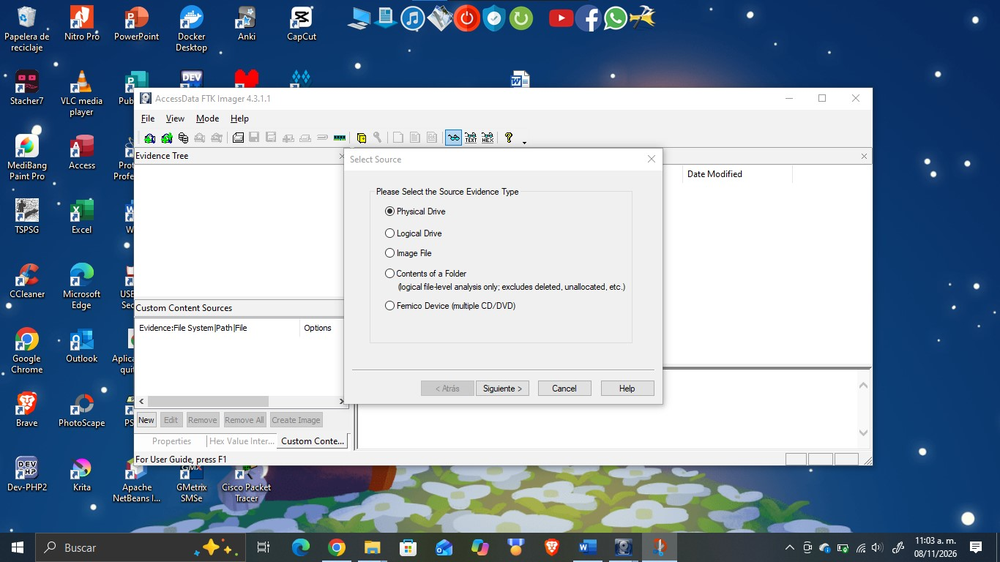
Después se eligió en la lista la unidad que se copiaría: \\.\PHYSICALDRIVE1, correspondiente a la memoria ADATA USB Flash Drive. Antes de hacer clic en Finish se verifica que sea el dispositivo correcto.
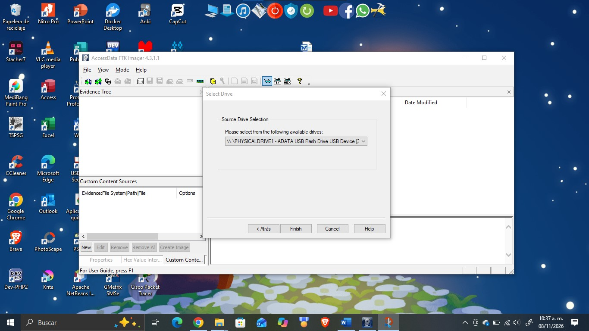
Configuración de la imagen forense
Al terminar el asistente se abre la ventana «Create Image», donde aparece la fuente (\\.\PHYSICALDRIVE1) y la lista de destinos vacía. Está activada la opción «Verify images after they are created», que calcula y compara los hashes al terminar. Para definir el destino se hace clic en «Add…».
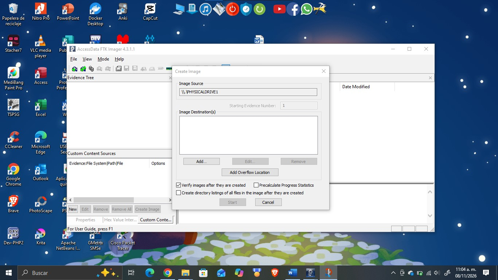
A continuación se seleccionó el formato de la imagen. Para esta práctica se eligió Raw (dd), un formato crudo de lectura universal.
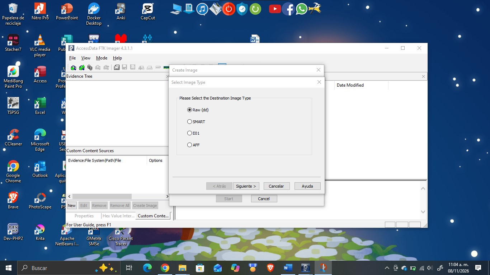
Luego se capturó la información de la evidencia con los datos indicados en la actividad.
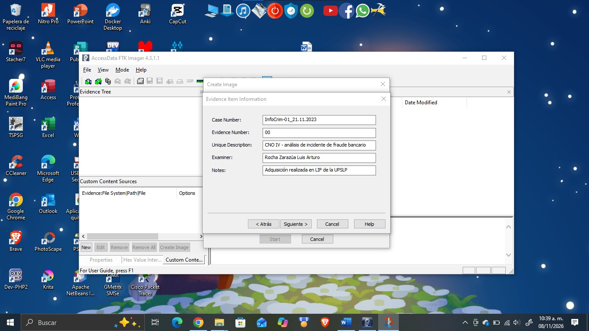
| Campo | Valor |
|---|---|
| Case Number | InfoCrim-01_21.11.2023 |
| Evidence Number | 00 |
| Unique Description | CNO IV - análisis de incidente de fraude bancario |
| Examiner | Rocha Zarazúa Luis Arturo |
| Notes | Adquisición realizada en LIF de la UPSLP |
Por último se definió el destino: se creó en el Escritorio la carpeta «InfoCrim13» y se nombró la imagen «infocrim_RZLA» (sin extensión), formada por el apellido paterno, el apellido materno y la inicial del nombre. El tamaño de fragmento se dejó en 1500 MB, por lo que la imagen se divide en varios segmentos.
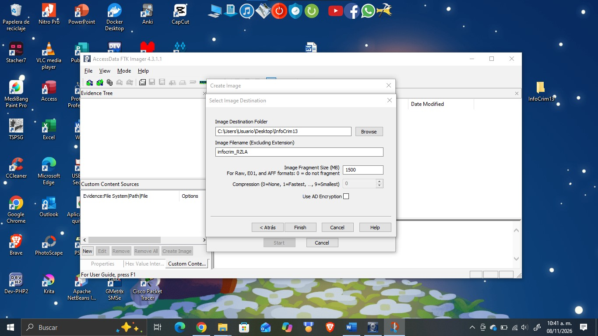
Ejecución y tiempos de la adquisición
Con la configuración terminada se hizo clic en «Start». FTK Imager copió la unidad sector por sector y, al finalizar, mostró el mensaje «Image created successfully» con un tiempo transcurrido de 0:03:10. Enseguida verificó la imagen y presentó la ventana «Drive/Image Verify Results».
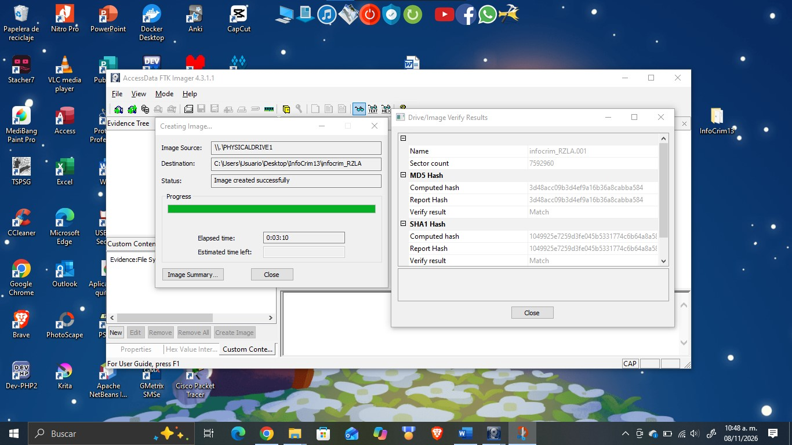
Las marcas de tiempo del proceso, tomadas del registro de la adquisición, se resumen en la tabla 3.
| Evento | Hora |
|---|---|
| Hora de inicio de la adquisición | 10:41:55 a. m. |
| Hora de término de la adquisición | 10:45:05 a. m. |
| Tiempo transcurrido | 0:03:10 (3 minutos con 10 segundos) |
| Inicio de la verificación | 10:45:06 a. m. |
| Fin de la verificación | 10:45:24 a. m. |
Resultados y archivos generados
Al terminar, la ventana de verificación mostró los resultados finales. La figura 10 presenta la parte inferior de esa ventana, donde los hashes calculados coinciden con los del reporte y no se encontraron bloques dañados. Los valores se resumen en la tabla 4.
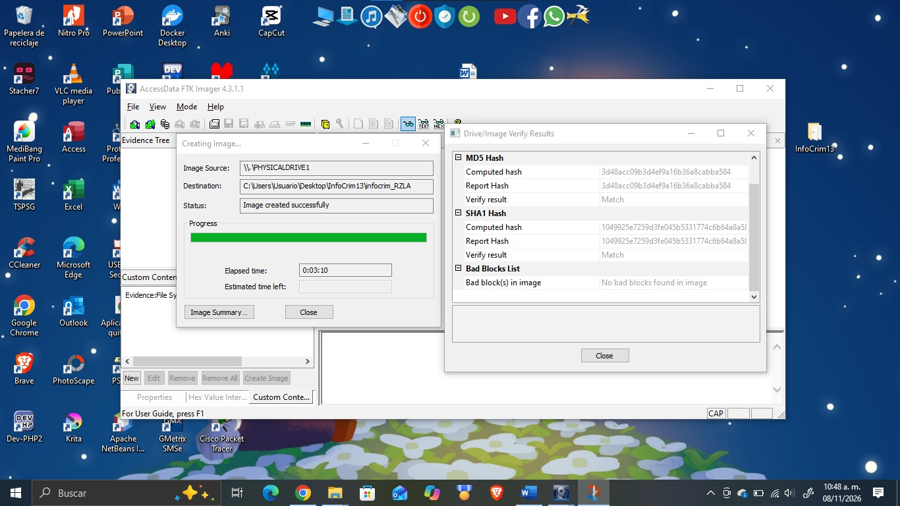
| Concepto | Resultado |
|---|---|
| Sectores copiados | 7,592,960 (512 bytes por sector) |
| Tamaño de la fuente | 3707 MB |
| Hash MD5 | 3d48acc09b3d4ef9a16b36a8cabba584 |
| Hash SHA-1 | 1049925e7259d3fe045b5331774c6b64a8a5837a |
| Resultado de la verificación | Match (MD5 y SHA-1) |
| Bloques dañados | No se encontraron |
El directorio InfoCrim13 contiene 4 archivos: tres segmentos de la imagen (.001, .002 y .003) y un archivo de texto con el resumen del proceso. Como el tamaño de fragmento fue de 1500 MB, los dos primeros segmentos pesan 1,536,000 KB cada uno y el tercero contiene el resto, 724,480 KB; la suma (3,796,480 KB ≈ 3707 MB) coincide con el tamaño de la fuente.
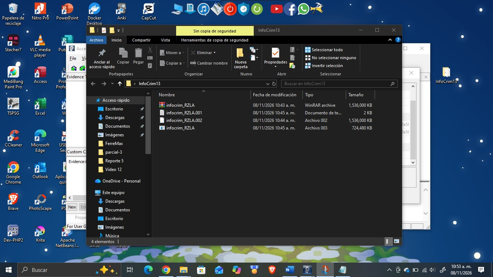
| Archivo | Tamaño | Descripción |
|---|---|---|
infocrim_RZLA.001 | 1,536,000 KB | Segmento 1 de la imagen Raw |
infocrim_RZLA.002 | 1,536,000 KB | Segmento 2 de la imagen Raw |
infocrim_RZLA.003 | 724,480 KB | Segmento 3 de la imagen Raw |
infocrim_RZLA.001.txt | 2 KB | Resumen del proceso (log) |
En el mismo directorio se generó el archivo de texto con el mismo nombre que la imagen, que contiene la información detallada del proceso: los datos del caso, la geometría de la unidad, los hashes calculados, los tiempos de adquisición y los resultados de la verificación. Este archivo se anexa al envío de la actividad.
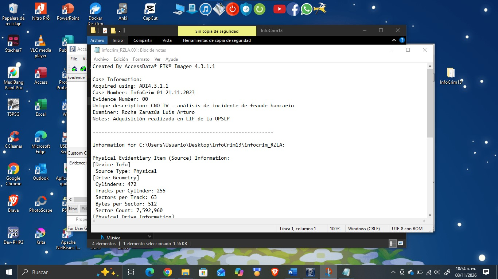
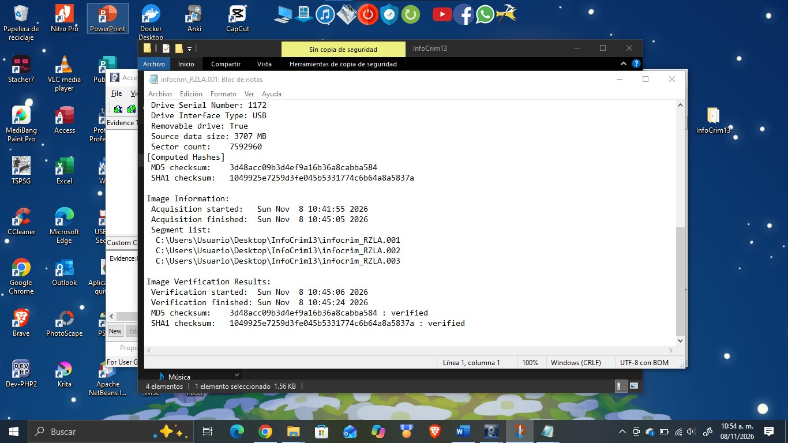
Formatos de imagen forense
9. ¿Qué es el formato Raw (dd)? Es una copia cruda, byte por byte, de todos los sectores del dispositivo, sin encabezados, sin compresión y sin metadatos del caso. Su ventaja es que es un formato universal que casi cualquier herramienta forense puede leer. Su desventaja es que ocupa el mismo espacio que el dispositivo original y no guarda dentro de sí información como el examinador o los hashes, por lo que esos datos deben registrarse aparte; por eso FTK Imager genera el archivo .txt. Además, puede dividirse en segmentos numerados (.001, .002, …), como en esta práctica.
10. ¿Qué es el formato E01? Es el formato de EnCase, también conocido como Expert Witness Format (EWF). Guarda la imagen de forma segmentada y permite comprimirla; además incluye en el mismo archivo los metadatos del caso (número de caso, examinador, notas, fechas), una verificación de errores (CRC) por bloque y el hash de la evidencia, lo que facilita comprobar su integridad. Aunque nació en EnCase, es compatible con la mayoría de las herramientas forenses, incluido FTK Imager.
11. ¿Cuál es la diferencia entre SMART y E01? SMART es el formato de la herramienta SMART de ASR Data, y E01 es el de EnCase. Ambos pertenecen a la familia EWF y comparten la idea de segmentar la imagen, comprimirla y guardar metadatos y verificaciones de integridad. La diferencia principal es su origen y su alcance: SMART (extensión .s01) es el formato más antiguo y menos usado, mientras que E01 (extensión .E01) es el estándar de facto, con más campos de información del caso y soporte mucho más amplio en herramientas. La tabla 6 compara los tres formatos.
| Característica | Raw (dd) | E01 | SMART |
|---|---|---|---|
| Origen | Copia cruda universal | EnCase (EWF) | ASR Data SMART (EWF) |
| Compresión | No | Opcional | Opcional |
| Metadatos del caso | No | Sí | Limitados |
| Hash / CRC incluido | No | Sí | CRC por bloque |
| Extensión típica | .dd, .001, .raw | .E01, .E02, … | .s01, .s02, … |
| Compatibilidad | Universal | Muy amplia | Más limitada |
Verificación de la integridad
La verificación de integridad es lo que convierte una copia en evidencia confiable. Una función hash (como MD5 o SHA-1) convierte todo el contenido de la unidad en una huella de longitud fija: 32 caracteres hexadecimales en MD5 (128 bits) y 40 en SHA-1 (160 bits). Si cambia un solo bit de los datos, la huella cambia por completo, de modo que dos hashes iguales indican que el contenido es idéntico.
FTK Imager calcula los hashes de la unidad de origen mientras la lee y, al terminar, los vuelve a calcular sobre los archivos de la imagen y los compara. En la figura 10 y en el archivo de texto aparece «Match» (coincidencia) en MD5 y SHA-1, lo que demuestra que la imagen es una copia exacta. Se usan dos algoritmos a la vez porque MD5 y SHA-1 tienen colisiones conocidas; por eso hoy se recomienda complementarlos con SHA-256.
La integridad también depende del procedimiento: en un caso real se usa un bloqueador de escritura para que el sistema operativo no modifique la unidad original, se conserva la evidencia original sin tocar y se mantiene la cadena de custodia, es decir, el registro de quién tuvo la evidencia, cuándo y para qué. Todo el análisis se hace sobre la copia.
Resultados
Análisis de los resultados
La adquisición de la memoria USB (\\.\PHYSICALDRIVE1, ADATA USB Flash Drive, 3707 MB) se completó correctamente en 3 minutos con 10 segundos, entre las 10:41:55 y las 10:45:05 a. m. del 8 de noviembre de 2026. Se copiaron 7,592,960 sectores de 512 bytes en formato Raw (dd) y la imagen se dividió en tres segmentos de hasta 1500 MB, más un archivo de texto con el registro del proceso.
La verificación fue exitosa: los hashes calculados a partir de la imagen coinciden con los de la unidad de origen (MD5 y SHA-1, tabla 4), y no se encontraron bloques dañados. Esto demuestra que la imagen es una copia fiel y que cualquier análisis posterior puede realizarse sobre ella sin tocar la evidencia original.
El tamaño de la imagen es consistente con la unidad original: 7,592,960 sectores × 512 bytes = 3,887,595,520 bytes (3707.5 MB), igual al «Source data size» de 3707 MB del registro. Esto confirma que se copió el dispositivo completo (incluidos espacio no asignado y archivos borrados) y no solo sus archivos visibles. Con fragmentos de 1500 MB resultan tres segmentos: dos completos de 1500 MB (1,536,000 KB) y uno con el resto, 707.5 MB (724,480 KB), que es justo lo que muestra la carpeta InfoCrim13.
Los hashes MD5 y SHA-1 del registro son los que identifican esta evidencia: cualquier persona que repita la adquisición o recalcule el hash de la imagen debe obtener los mismos valores. El archivo de texto y la ventana de verificación coinciden entre sí, y el examinador, el número de caso y las notas quedaron registrados junto con los tiempos, lo que hace el proceso verificable y reproducible.
Relación con el caso y líneas de investigación
La imagen pertenece al caso InfoCrim-01_21.11.2023, un análisis de incidente de fraude bancario. En esta etapa solo se adquirió y verificó la evidencia; el contenido de la memoria aún no se ha analizado, por lo que no se puede afirmar qué información contiene. Con la imagen ya verificada, las líneas de investigación a seguir se resumen en la tabla 7.
| N.º | Línea | Acción propuesta |
|---|---|---|
| 1 | Preservar la evidencia | Resguardar la memoria original sin usarla más, registrar la cadena de custodia y trabajar solo con copias de la imagen, recalculando el hash antes de cada análisis. |
| 2 | Examinar la imagen | Abrirla en modo solo lectura (por ejemplo, con FTK Imager o Autopsy) para identificar particiones, sistema de archivos, carpetas y archivos. |
| 3 | Recuperar datos borrados | Buscar archivos eliminados y contenido en espacio no asignado, que una copia lógica no habría incluido. |
| 4 | Buscar rastros del fraude | Localizar documentos, comprobantes, hojas de cálculo, correos o datos de cuentas bancarias mediante búsqueda por palabras clave. |
| 5 | Construir una línea de tiempo | Analizar las fechas de creación, modificación y acceso, y los metadatos de los archivos (como en la Actividad 11 con ExifTool). |
| 6 | Documentar y presentar | Registrar cada hallazgo y presentarlo en un informe con soporte técnico para la institución que lo requiera. |
Conclusión
La práctica permitió realizar de principio a fin una adquisición forense con FTK Imager y comprender por qué cada paso importa: elegir una unidad física para copiar todo el dispositivo, definir un formato adecuado, registrar los datos del caso y, sobre todo, verificar la integridad con funciones hash. Los hashes MD5 y SHA-1 coincidentes son la prueba de que la copia es idéntica a la evidencia y de que no fue alterada durante el proceso, lo que le da soporte técnico y legal.
También quedó claro el valor de la documentación: el archivo de texto que genera la herramienta deja constancia de quién adquirió la evidencia, cuándo, con qué software y con qué resultados. Como limitación, en esta práctica no se utilizó un bloqueador de escritura; en un caso real es indispensable para garantizar que la evidencia original no se modifique. Además, aunque MD5 y SHA-1 siguen siendo habituales en la adquisición, hoy se recomienda complementarlos con un algoritmo más robusto, como SHA-256.
Referencias bibliográficas
- Exterro. (s. f.). FTK Imager [Software]. https://www.exterro.com/
- Exterro. (s. f.). FTK Imager User Guide. https://www.exterro.com/
- International Organization for Standardization. (2012). ISO/IEC 27037:2012. Information technology — Security techniques — Guidelines for identification, collection, acquisition and preservation of digital evidence. ISO.
- Kent, K., Chevalier, S., Grance, T., & Dang, H. (2006). Guide to integrating forensic techniques into incident response (NIST Special Publication 800-86). National Institute of Standards and Technology. https://csrc.nist.gov/pubs/sp/800/86/final
- Metz, J. (s. f.). Expert Witness Compression Format (EWF) specification [Documentación de libewf]. https://github.com/libyal/libewf